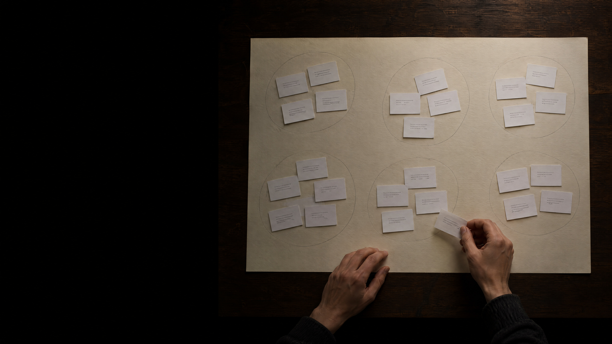

before a computer
can search for
meaning, it has to
know where each
text belongs.
image: ai-generated (gpt-image-2.5-flare)
close in meaning, close on the map
a place is a list of numbers
key idea
an
embedding
is a list of numbers that says where something lies on a map of meaning.
your sheet: 2 numbers per card · the model: 384 numbers per token and per text
a table with one row per token
similarity is the angle between two arrows
measured with the model
king − man + woman
the same works elsewhere
paris − france + germany
→
berlin 0.79
puppy − dog + cat
→
kitten 0.87
doctor − hospital + school
→
teacher 0.82
walked − walk + swim
→
swimming 0.91
swam 0.88
the way back is blurred
what the model reads
four steps from tokens to one list
the same token, two meanings
the
bank
raised its interest rates.
we watched the ducks from the
bank
of the river.
“bank” in these two sentences
0.76
“bank” in two sentences about money
0.88
the numbers of the token after the six layers of the model
where the numbers come from
the idea behind it
you shall know a word by the company it keeps.
John Rupert Firth, 1957
384 directions, drawn on two
search by meaning
key idea
a search by meaning finds texts that share no word with the question.
about the same, or the same?
key idea
a map of meaning knows what a text is about, but not whether it is true.
similarity is one sum
what real systems do with it